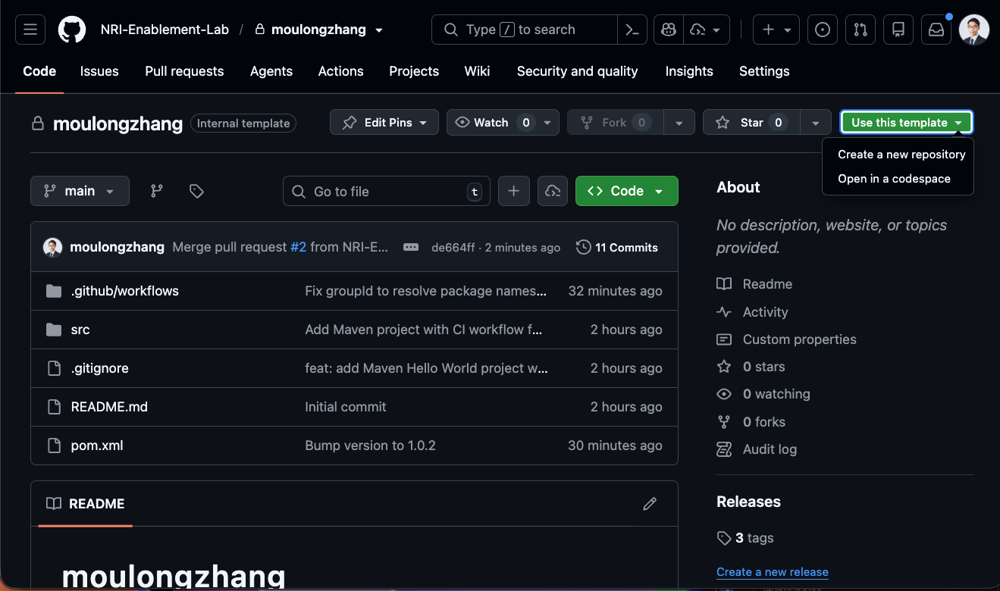
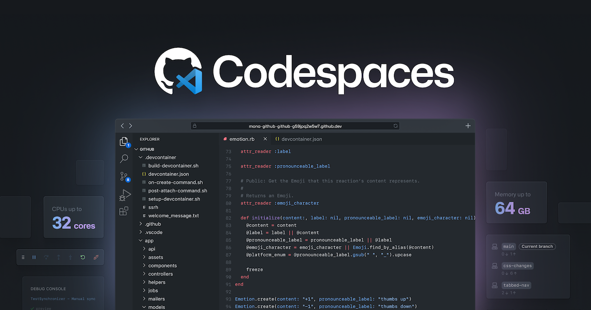
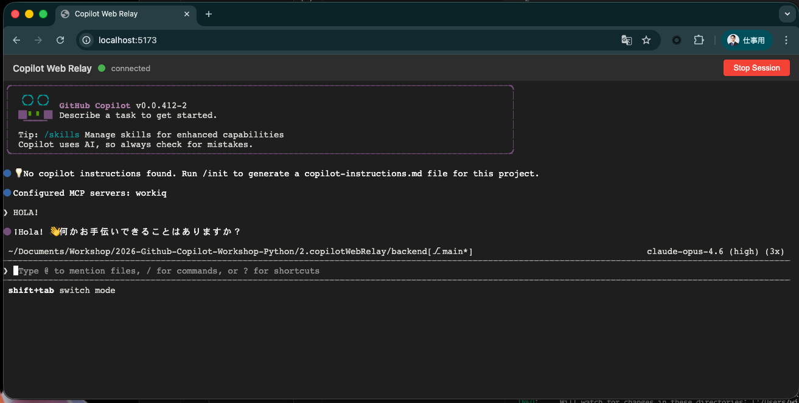
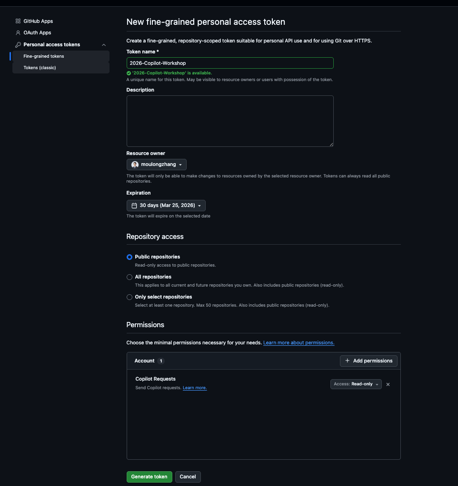

GitHub Copilotワークショップへようこそ！
このワークショップでは、GitHub Copilot CLI を中心に、最新の AI 駆動開発を体験していただきます。Copilot CLI はターミナル上で動作する対話型の AI アシスタントであり、コード生成・レビュー・リファクタリングなどの幅広いタスクを自律的に実行できます。
本日のゴール
- GitHub Copilot CLI の基本操作を理解する
- Copilot SDK を活用した Web アプリケーション開発を体験する
- 複数の AI モデルを使ったコードレビューを実践する
- Agentic Workflow によるドキュメント自動更新を構築する
本日のアジェンダ
ステップ | 内容 | 概要 |
1 | ワークショップについて | 概要説明とゴールの確認 |
2 | プロジェクトセットアップ | リポジトリの作成と開発環境の準備 |
3 | Copilot Web Relay を作ろう | Copilot CLI + SDK で Web アプリを構築 |
4 | Copilot Code Review | 複数モデルを使ったコードレビュー |
5 | Agentic Workflow | ドキュメンテーションの自動更新 |
前提条件
- Visual Studio Code がインストールされていること
- GitHub Copilotのライセンスがあること（Business/Enterprise プラン推奨）
- GitHubアカウントを持っていること
このワークショップでは、以下のGitHubリポジトリを使用します：
プロジェクトURL: https://github.com/moulongzhang/2026-Github-Copilot-Workshop-Python
ステップ1: テンプレートからリポジトリを作成する
まず、上記のプロジェクトURLをブラウザで開き、テンプレートから自分のリポジトリを作成します：
- プロジェクトURL（https://github.com/moulongzhang/2026-Github-Copilot-Workshop-Python）をブラウザで開く
- 右上の Use this template ボタンをクリックし、Create a new repository を選択

テンプレートからの作成が完了すると、あなたのGitHubアカウントに新しいリポジトリが作成されます。
ステップ2: 開発環境のセットアップ
作成したリポジトリを使って、GitHub Codespacesで開発環境を準備します：
- 作成したリポジトリのページで（
https://github.com/[あなたのユーザー名]/moulongzhang） - 緑色の Code ボタンをクリック
- Codespaces タブを選択
- Create codespace on main をクリック

ステップ3: Copilot の設定確認
GitHubで利用可能なCopilot機能を有効化しましょう。
- GitHubの右上のプロフィールアイコンをクリック
- Your Copilot を選択

以下の機能を有効化してください：
- Editor preview features - エディタのプレビュー機能
- Copilot CLI - ターミナルでのCopilot利用
- Copilot code review - コードレビュー機能
- Copilot coding agent - 自律的なコーディングエージェント
ここからは、Copilot Web Relay — ブラウザから GitHub Copilot CLI にアクセスできる Web アプリケーションを Copilot CLI と Copilot SDK を使って構築します。
このセクションでは、事前に用意された設計書をCopilotに読み込ませ、設計書をもとに対話しながら段階的に実装していくワークフローを体験します。

Copilot Web Relay とは？
ローカルで動作する GitHub Copilot CLI を、ターミナルを直接操作することなくブラウザ上のUIを通じてリアルタイムにやり取りできるようにするWebアプリケーションです。
アーキテクチャ概要
コンポーネント | 技術スタック | 役割 |
Browser | React + TypeScript + Vite | ターミナル表示（xterm.js）、セッション管理 |
Backend Server | Python (FastAPI) + WebSocket | Copilot CLI プロセスの管理、WebSocket ブリッジ |
CLI Bridge | Python (asyncio + pexpect) | Copilot CLI の PTY（疑似端末）制御、入出力のストリーミング |
Browser ↔ WebSocket（双方向通信）↔ Backend Server ↔ PTY/stdin/stdout（子プロセス管理）↔ Copilot CLI
開発の進め方
このセクションでは以下の流れで進めます：
- 設計書を確認 — プロジェクトに配布された設計書を確認し、アプリケーションの全体像を理解する
- GitHub Copilot CLI — ターミナルで CLI を立ち上げ、問題なく動作することを確認する
- AI 駆動開発 — 設計書を活用し、GitHub Copilot CLI と対話しながら Web アプリケーションを Vibe Coding で実装する
1. 設計書の確認
プロジェクト内の copilotWebRelay/planning.md に、Copilot Web Relay の設計書が配布されています。まずはこのファイルを開いて、アプリケーションの全体像を確認しましょう。
設計書には以下の内容が含まれています：
- アーキテクチャ: Browser ↔ WebSocket ↔ FastAPI ↔ PTY ↔ Copilot CLI の構成
- コンポーネント構成: Frontend（React/TS）、Backend（FastAPI）、CLI Bridge（pexpect）
- 機能要件: Phase 1（MVP）と Phase 2（チャット UI 強化）
- WebSocket プロトコル設計: メッセージ形式と状態管理の仕様
- ディレクトリ構造: ファイル配置と各ファイルの役割
- 実装タスク一覧: タスク間の依存関係
- 実装上の重要な注意事項: つまずきやすいポイントの事前対策
2. GitHub Copilot CLI の起動確認
VS Code のターミナルを開き、以下のコマンドを入力して GitHub Copilot CLI を起動してみましょう：
copilot
正常に起動すると、対話型のインターフェースが表示されます。/help と入力して、利用可能なコマンドを確認してみましょう。
3. GitHub Copilot CLI のコマンド一覧
GitHub Copilot CLI では、テキストで自然言語の指示を入力するほか、/ で始まるスラッシュコマンドを使用できます。
コード関連
コマンド | 説明 |
| IDE ワークスペースに接続 |
| 現在のディレクトリの変更差分を確認 |
| コードレビューエージェントを実行して変更を分析 |
| 言語サーバーの設定を管理 |
| マルチライン入力（Shift+Enter / Ctrl+Enter）のターミナル設定 |
パーミッション
コマンド | 説明 |
| すべてのパーミッション（ツール・パス・URL）を有効化 |
| ファイルアクセスの許可ディレクトリを追加 |
| 許可されたディレクトリの一覧を表示 |
| 作業ディレクトリを変更または表示 |
| 許可ツールのリストをリセット |
セッション管理
コマンド | 説明 |
| 別のセッションに切り替え（セッションID指定可） |
| 現在のセッション名を変更 |
| コンテキストウィンドウのトークン使用量を表示 |
| セッションの使用状況メトリクスと統計を表示 |
| セッション情報とワークスペースサマリーを表示 |
| 会話履歴を要約してコンテキストウィンドウの使用量を削減 |
| セッションを Markdown ファイルまたは GitHub Gist としてエクスポート |
ヘルプ・フィードバック
コマンド | 説明 |
| 対話コマンドのヘルプを表示 |
| CLI バージョンの変更履歴を表示 |
| CLI に関するフィードバックを送信 |
| ターミナルテーマの確認・設定 |
| 利用可能な実験的機能の表示、実験モードの切り替え |
その他
コマンド | 説明 |
| 使用する AI モデルを選択（GPT、Claude、Gemini 等） |
| 会話履歴をクリア |
| コーディング前に実装計画を作成 |
| カスタム指示ファイルの表示・切り替え |
| 現在のセッションログを分析 |
| Copilot へのログイン・ログアウト |
| GitHub ユーザーの管理 |
| CLI を終了 |
カスタム指示ファイル
Copilot CLI は以下の場所にあるカスタム指示ファイルを自動的に読み込みます：
CLAUDE.md/GEMINI.md/AGENTS.md（git ルートおよびカレントディレクトリ）.github/instructions/**/*.instructions.md（git ルートおよびカレントディレクトリ）.github/copilot-instructions.md$HOME/.copilot/copilot-instructions.md
設計書の確認と GitHub Copilot CLI の動作確認ができたら、いよいよ Vibe Coding で Copilot Web Relay を実装していきます。
以下の 4 ステップを順番に実行するだけで、Copilot が設計書をもとにアプリケーションを構築してくれます。
ステップ 1: Copilot CLI を起動する
VS Code のターミナルで Copilot CLI を起動します。
copilot
ステップ 2: すべてのパーミッションを許可する
/allow-all
/allow-all は、Copilot CLI に対してツールの実行・ファイルアクセス・外部URLへのアクセスのすべてのパーミッションを一括で許可するコマンドです。
通常、Copilot CLI はセキュリティのために、ファイルの読み書きやコマンドの実行、外部通信を行う際にユーザーへ都度許可を求めます。/allow-all を実行することで、これらの確認プロンプトをスキップし、Copilot がファイルの作成・編集、パッケージのインストール、サーバーの起動などを自律的に実行できるようになります。
ステップ 3: ハイエンドモデルを選択する
/model Claude Opus 4.6
最も高性能なモデルを選択します。Copilot CLI は /model コマンドで使用する AI モデルを切り替えることができ、タスクの複雑さに応じて最適なモデルを選べます。今回のような複数コンポーネントを持つ Web アプリケーションの構築には、推論能力の高いハイエンドモデルが効果的です。
ステップ 4: Fleet モードで一気に実装する
/fleet Copilot Web Relay — ブラウザから GitHub Copilot CLI にアクセスできる Web アプリケーションを構築します。copilotWebRelay/planning.md の計画に沿って実装を進めてください。不明なことがあれば事前に私に聞いてください。
/fleet は、複数のサブエージェントを並行して起動し、大規模なタスクを分割・同時実行するためのコマンドです。
通常の Copilot CLI では 1 つのタスクを順番に処理しますが、/fleet を使うと Copilot が自動的にタスクを分解し、バックエンドの実装・フロントエンドの実装・設定ファイルの作成など複数の作業を並行して進めます。これにより、従来1つずつ指示して進めていた作業を、一度の指示で一気に完成させることができます。
Fleet モードでは以下のことが自動的に行われます：
- タスクの分解: 設計書を読み取り、実装すべきコンポーネントを特定
- 並行実装: バックエンド（FastAPI + CLI Bridge + WebSocket）とフロントエンド（React + xterm.js）を同時に実装
- 依存関係の解決: パッケージのインストール、設定ファイルの生成
- 統合テスト: 実装後の動作確認
つまずいた場合のヒント
Fleet モードの実装でエラーが発生した場合は、以下を試してみましょう：
- エラーメッセージをそのまま Copilot に共有: 「このエラーを修正してください」と伝えるだけで修正してくれます
/diffで変更内容を確認: 意図しない変更がないかチェック/modelでモデルを変更: 別のモデルに切り替えて再試行- 設計書の注意事項を確認:
planning.mdの「実装上の重要な注意事項」セクションに、よくあるバグの対処法が記載されています
以下が、私の場合の1ショットでプロンプトを流した実装結果です。

Copilot Web Relay の実装が完了したら、Copilot CLI のレビュー関連コマンド を使って、複数の AI モデルでコードレビューを行いましょう。異なるモデルの視点から品質・セキュリティ・パフォーマンスの問題を多角的に検出することがゴールです。
レビューに使う主なコマンド
Copilot CLI にはコードレビューに活用できるコマンドが複数用意されています。
コマンド | 説明 |
| コードレビューエージェントを実行して変更を分析する |
| 現在のディレクトリの変更差分を確認する |
| 使用する AI モデルを選択する（Claude、GPT、Gemini 等） |
| 現在のブランチの Pull Request を操作する |
| セッションを Markdown ファイル、HTML ファイル、または GitHub Gist としてエクスポートする |
| 直前のレスポンスをクリップボードにコピーする |
| 会話履歴を要約してコンテキストウィンドウの使用量を削減する |
| 直前のターンを巻き戻し、ファイル変更を元に戻す |
ステップ 1: 変更差分を確認する
まず、Copilot Web Relay の実装でどのような変更が入ったかを /diff で確認しましょう。
/diff
/diff は現在のディレクトリの変更差分をレビューするコマンドです。レビュー前に変更の全体像を把握しておくことで、レビュー結果の理解が深まります。
ステップ 2: コードをコミット & Push する
Copilot CLI で以下のように指示して、実装をコミット & Push します：
実装した Copilot Web Relay のコードをすべて git add して、適切なコミットメッセージでコミットし、feature/copilot-web-relay ブランチにプッシュしてください。
ステップ 3: モデル 1 — Claude でレビュー
Copilot CLI のデフォルトモデルは Claude Sonnet 4.5 です。/model コマンドで使用するモデルを確認・切り替えできます。
/model
モデル一覧が表示されるので、Claude 系のモデルを選択してください。選択したら、レビューを実行します：
/review
/review コマンドはコードレビューエージェントを起動し、以下の観点で変更差分を自動分析します：
- バグ・論理エラー: 実行時に発生しうる問題
- セキュリティ脆弱性: インジェクション攻撃、認証の不備など
- パフォーマンス: 非効率な処理やメモリリーク
- ベストプラクティス: 言語やフレームワークの慣習への適合
レビュー結果は /copy でクリップボードにコピーするか、/share でファイルに保存しておきましょう：
/copy
ステップ 4: モデル 2 — GPT でレビュー
会話をリセットして、GPT モデルに切り替えてレビューを実行します。
/new
/model
モデル一覧から GPT 系のモデル（例: GPT-5）を選択してください。
/review
レビュー結果を保存します：
/copy
ステップ 5: モデル 3 — Gemini でレビュー
同様に、Gemini モデルでもレビューを実行します。
/new
/model
モデル一覧から Gemini 系のモデル（例: Gemini 2.5 Pro）を選択してください。
/review
/copy
ステップ 6: レビュー結果の比較と改善
3つのモデルによるレビュー結果を比較してみましょう。/compact でコンテキストを整理してから、以下のプロンプトを入力してください：
先ほど3つの異なるモデル（Claude、GPT、Gemini）で /review を実行しました。それぞれのレビューで指摘された内容を整理して、以下の観点で比較表を作成してください：
- バグ・論理エラー
- セキュリティ
- パフォーマンス
- コード品質・ベストプラクティス
その上で、すべてのモデルが共通して指摘した問題を優先的に修正してください。
修正に問題があった場合は、/rewind で直前のターンを巻き戻してファイル変更を元に戻すことができます。
ステップ 7: Pull Request の作成と GitHub 上での Code Review
ローカルでの修正が完了したら、/pr コマンドで Pull Request を操作できます。または GitHub 上で Pull Request を作成し、GitHub の Copilot Code Review 機能も併用しましょう：
- 修正したコードをコミット & Push
- GitHub 上で Pull Request を作成
- Reviewers セクションで Copilot をレビュワーとしてアサイン

最後のステップでは、GitHub Actions と Copilot を組み合わせた Agentic Workflow を構築し、コード変更に連動してドキュメントを自動更新する仕組みを体験しましょう。
Agentic Workflow とは
Agentic Workflow は、GitHub Actions のワークフロー内で Copilot（AI）を活用し、コードの変更に応じた自律的なタスクを実行する仕組みです。今回は、Copilot Web Relay のコードに変更が加わった際に、関連するドキュメントを自動更新するワークフローを構築します。
ステップ 1: PAT（Personal Access Token）の作成
Agentic Workflow が GitHub Actions で Copilot を利用するために、Personal Access Token を作成します。
Fine-grained PAT の作成
以下のURLにアクセスして、新しいFine-grained PATを作成します：
https://github.com/settings/personal-access-tokens/new
設定内容：
- Token name: 任意の名前を入力してください（例:
copilot-workshop） - Resource owner: 自分のユーザーアカウントを選択
- Repository access: Public repositories を選択
- Permissions: Copilot Requests を有効化

作成が完了したら、表示されたPATを必ずコピーしてください。
Repository Secret に設定
作成したPATをリポジトリのシークレットとして設定します：
- 自分のリポジトリの Settings タブをクリック
- 左サイドバーから Secrets and variables → Actions を選択
- New repository secret をクリック
- 以下の内容を入力：
- Name:
COPILOT_GITHUB_TOKEN - Value: 先ほど作成したPATを貼り付け
- Name:
- Add secret をクリック
Workflow permissions の確認
- 自分のリポジトリの Settings タブをクリック
- 左サイドバーから Actions → General を選択
- Workflow permissions セクションで Allow GitHub Actions to create and approve pull requests にチェックが入っていることを確認
- チェックが入っていない場合は有効化して Save をクリック
ステップ 2: Agentic Workflow の作成
Copilot CLI で以下のプロンプトを入力して、Agentic Workflow を作成しましょう：
以下のURLを参照して GitHub Agentic Workflow を作成してください。
https://github.com/github/gh-aw/blob/main/create.md
ワークフローの目的は以下のとおりです：
- copilotWebRelay 配下のコードが更新された時に実行されます
- copilotWebRelay 配下のコードの内容に応じて copilotWebRelay/docs のドキュメンテーションを更新し、ソースコードとドキュメンテーションが常に一致するようにします
ステップ 3: ワークフローの動作確認
ワークフローが作成できたら、コードに変更を加えて動作を確認しましょう：
- Copilot Web Relay のコードに小さな変更を加える（例: コメントの追加、関数の改善など）
- 変更をコミットして Push する
- GitHub の Actions タブでワークフローが実行されていることを確認
- ワークフロー完了後、ドキュメントを更新する Pull Request が自動的に作成されることを確認
ステップ 4: Auto Healing DevOps の作成（オプション）
余裕がある方は、CI/CD のジョブが失敗した時にそれを検知して自動修正するワークフローも作成してみましょう。
以下のURLを参照して GitHub Agentic Workflow を作成してください。
https://github.com/github/gh-aw/blob/main/create.md
ワークフローの目的は以下のとおりです：
リポジトリで失敗したワークフロー実行を検知し、原因を分析してIssueを自動作成する。
作成したissueにはCopilotを自動アサインする。
ワークフローが作成できたら、意図的にビルドを失敗させて動作を確認します：
System.out.println("Hello World!"); を System.out.println("Hell World!"); にして push して
Push 後、GitHub Actions のワークフローが失敗を検知し、Copilot が自動的に Issue を作成してアサインされることを確認しましょう。
今日学んだこと
このワークショップでは以下のことを学びました：
- GitHub Copilot CLI の基本操作 — ターミナル上でのAIアシスタントの活用
- Copilot SDK を活用した Web アプリケーション開発 — 設計書駆動の Vibe Coding と Fleet モードによる並行実装
- 複数モデルによるコードレビュー — Claude、GPT、Gemini を使い分けた多角的なコード品質チェック
- Agentic Workflow — GitHub Actions と Copilot を組み合わせたドキュメント自動更新
次のステップ
- 実際のプロジェクトで Copilot CLI を活用してみる
/reviewを日常のコードレビューワークフローに組み込む- Agentic Workflow を自社のCI/CDパイプラインに導入する
- Copilotの新機能をキャッチアップする
リソース
お疲れさまでした！